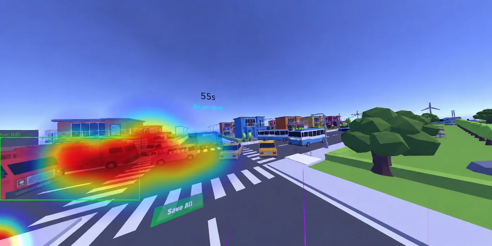

Speak the task. Look at the scene. Speech-anchored multimodal task-level selection for dense VR scenes
Pointing at one object at a time collapses when a scene is full of near-identical vehicles. This prototype treats selection as a task-level intent mapping problem: the spoken instruction opens a temporal window, and gaze, visual candidates and constrained language parsing are fused inside it to produce executable scene commands.
- 77.3% Object accuracyvs. 64.1% ray casting
- 42.25 NASA–TLX workloadvs. 66.05 ray casting
- 79.38 SUS usabilityproposed condition
- 20 Participants10 trials each, within-subject
One recorded trial, frame by frame
Every panel, timestamp and object ID below comes from a single real trial in the study: P01_Proposed_M1_20260530_143223.
The replay walks the five phases of the episode. Press Run the recorded trial to step through them automatically, or click a timeline entry.
What runs between the utterance and the scene command
Latencies are the measured per-stage budget of the prototype on the workstation used in the study. Press Execute to replay the stage sequence.
$ ready — press Execute to run the selection pipeline
Speech-anchored window
Rj = [ tjs − Δ, tjs + Δ ] Δ = 1.5 s
One window per target noun. Inside it the system gathers the gaze sample set Gj and selects the video frame closest to the noun onset. This is what makes asynchronous speech, gaze and video streams comparable at all.
Weighted fusion
Si = ωgsgaze + ωsssem + ωtstemp + ωcsconf

Client–server prototype
The headset streams speech, first-person video and gaze; the workstation runs recognition, perception and parsing, and returns a structured command. Unity time is the shared clock.

Modules
Object registry & stable identity
Detections are temporary: the same vehicle can receive a different visual ID on the next frame. Before runtime a panoramic reference view registers every interactable object with its category, colour, type and sequence, and detection boxes are matched against those templates.
u = { category, colour, type, seq }
That is what lets a ranked candidate become an executable scene object rather than a box on a frame.
{
"selected_object_ids": [103, 104],
"scores": [0.92, 0.88],
"status": "success"
}Trial capture format
Each trial is written to disk as one package, which is what makes the study auditable and the ablation reproducible.
P01_Proposed_M1_20260530_143223/
├── frame_000000.jpg … frame_000215.jpg 216 frames, 1920x960
├── audio.wav 16 kHz mono
├── gaze.jsonl 182 samples @ 60 Hz
├── rayhit.jsonl (ray condition only)
└── trial_meta.json instruction, targets, timingFour streams, one clock
Counts below are from the demonstration trial. Every modality carries its own timestamp, which is why the speech anchor is needed before anything can be fused.
Why the clock is the hard part
Whisper returns word timings relative to the audio buffer, gaze arrives as absolute headset timestamps, and video frames are written in capture order. The anchor converts all three onto the Unity timeline before a single score is computed:
tmabs = tstart + tmasr

The five missions, as they were actually spoken
Each participant completed all five under both conditions. The instruction text and target IDs are read straight from the recorded trial metadata.
Trial protocol
- Design
- Within-subject, 2 conditions × 5 missions = 10 formal trials per participant
- Per trial
- 10 s instruction countdown, then a 20 s execution stage
- Ray
- Controller ray casting with trigger confirmation
- Proposed
- Speech command + gaze; backend recognition, grounding, command return, scene execution
- Scope
- Object and destination-entity selection; no manual vehicle dragging
Participants
- Sample
- 20 participants (P01–P20), age 19–23 (M = 20.95, SD = 0.94)
- Gender
- 7 female; 19 right-handed
- Experience
- 17 very limited VR experience; 14 no prior controller experience; 15 no prior gaze/head-tracking experience
- Scene
- Outdoor vehicle relocation: high local density, strong visual similarity, long target distances
Against controller ray casting
Representative multimodal systems lacked compatible task-level designs or reproducible implementations, so the baseline is the conventional ray-casting technique.
| Metric | Ray | Proposed | Change |
|---|
Read the two accuracy numbers together
Strict task success is all-or-nothing: any wrong entity fails the trial, so residual pipeline errors in speech recognition, parsing or grounding cap it. Object-level accuracy measures how many targets were recovered per trial, and that is where the fusion pays off — 64.1% → 77.3%.
Ablation — object-level accuracy
Removing conflict handling costs 5.8 pp; every single-modality variant lands far below the fused system.
Fusion-weight sensitivity
| Config. | ωg | ωs | ωt | ωc | Accobj |
|---|
Config. D is the setting used in the main method.
Gaze hot-zone analysis
| Density | Accobj | Gaze hit rate | Slots |
|---|
Expansion parameter η = 0.15: the template box grows by 1.30× about its centre before clipping. No dedicated extreme-density stress test was run.
Why head speed rose but workload fell
Head rotation speed was higher under the proposed condition (73°/s vs 46°/s) while NASA–TLX total and physical demand were lower. Users acquired targets through gaze shifts and speech instead of sustained arm raising, fine ray aiming and trigger operation.
A complement, not a replacement
Several participants still preferred ray casting for nearby precise work — P15 valued its directness and explicit confirmation, P13 found it better for close targets. Preference tracked distance, density and desired control, which points to task-dependent hybrid interaction.
Evidence is limited to the outdoor vehicle-relocation scene; the pipeline uses no vehicle-specific rules, but generalisability is not yet established.
Reference & contact
The manuscript is under review at Data Intelligence; bibliographic details will be updated on publication. The full text is not hosted here.
@article{zhang2026multimodal,
title = {Multimodal-Assisted Task-Level Selection for
Dense Similar Objects in Virtual Reality},
author = {Zhang, Yuntong and Yin, Yue and Zhao, Yu and
Yu, Jiaxin and Xie, Liang},
journal = {Data Intelligence},
year = {2026},
note = {Under review}
}Authors
Access
For the full manuscript, supplementary material or dataset requests, contact the corresponding author.
yinyuebuaa@126.com Source on GitHub
Supported by NSFC grants 62332019 and 62576356, the National Key R&D Program of China under 2023YFF1203900 and 2023YFF1203903, and the Beijing Nova Program under 20240484513.